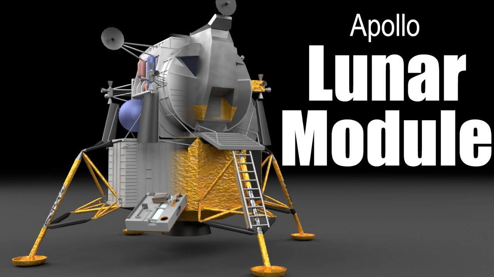
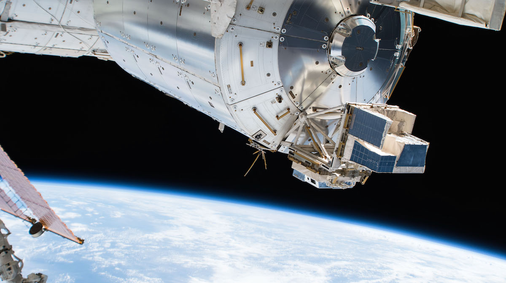
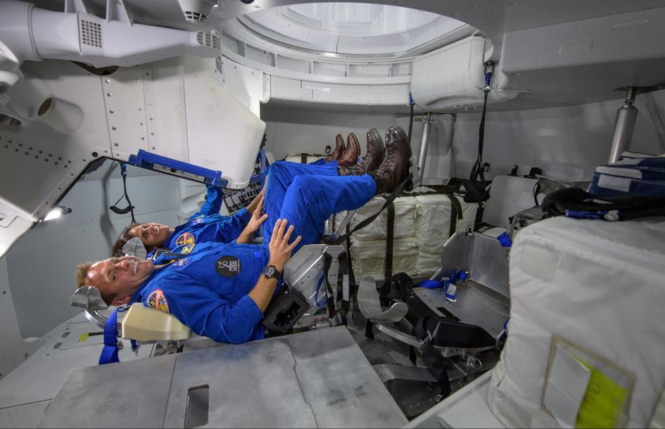

Rakiety Nośne
Rakiety nośne, takie jak Saturn V i Falcon 9, umożliwiły dostarczanie ładunków i ludzi na orbitę, a także poza nią.

Moduły Kosmiczne
Moduły kosmiczne, takie jak Apollo Lunar Module, zostały zaprojektowane specjalnie do lądowania na Księżycu.

Stacje Kosmiczne
Międzynarodowa Stacja Kosmiczna (ISS) umożliwia długoterminowe badania i współpracę międzynarodową.

Systemy Podtrzymywania Życia
Systemy podtrzymywania życia umożliwiły ludziom długoterminowy pobyt w przestrzeni kosmicznej.